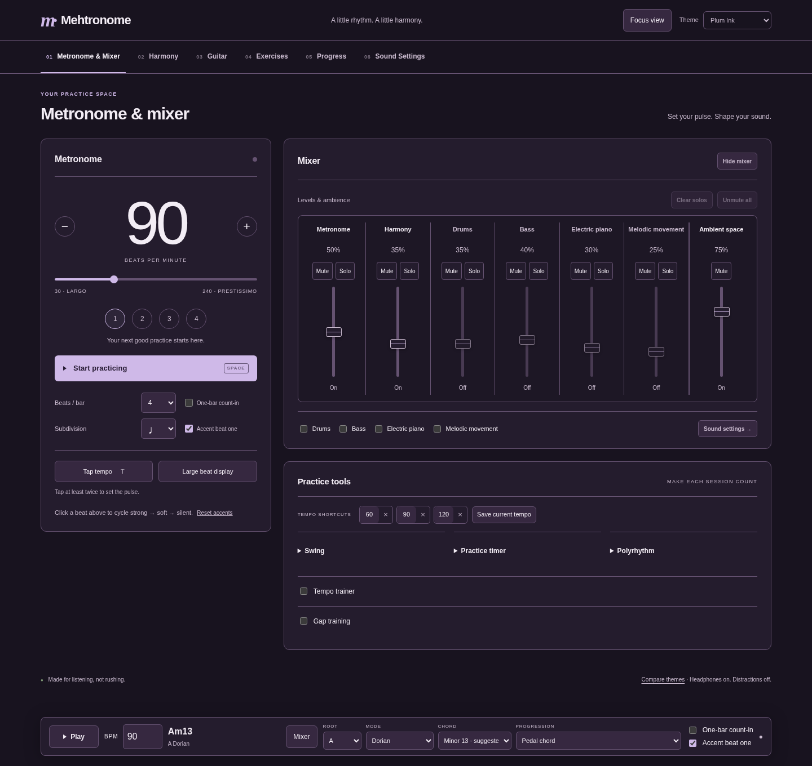
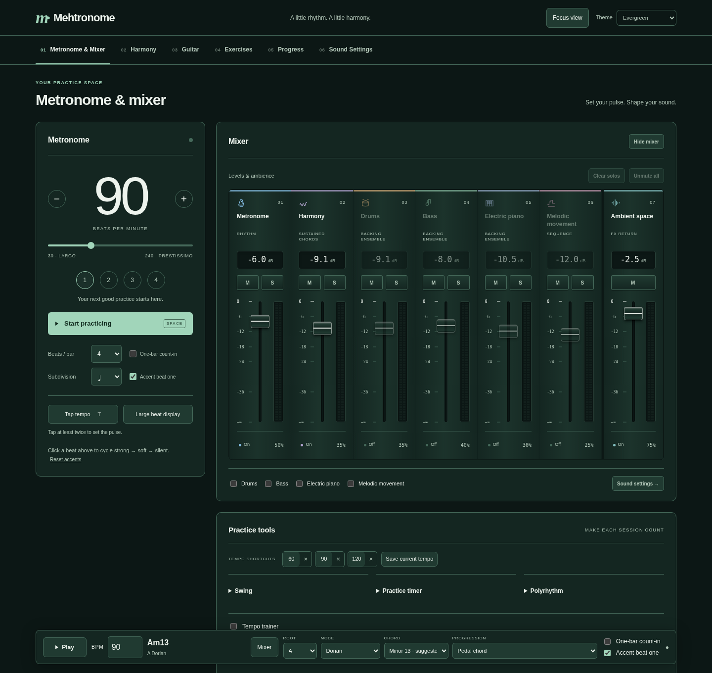
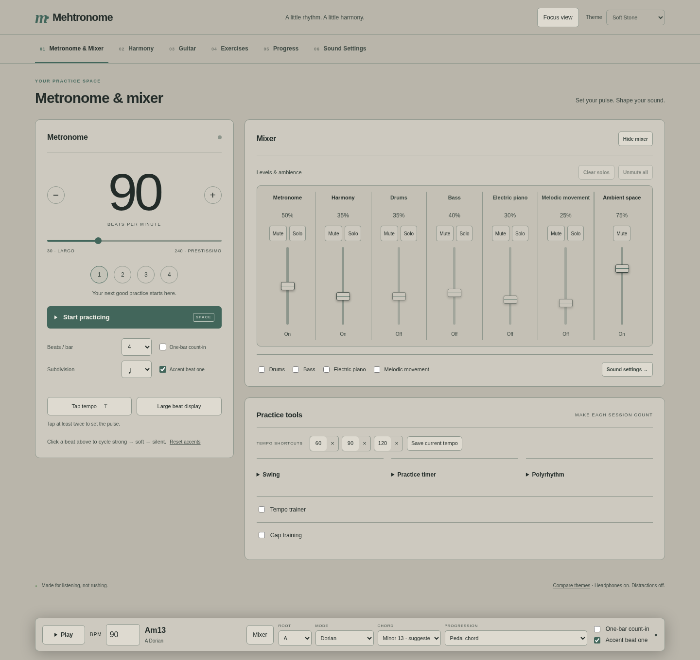

Choose a theme for your session. Mehtronome remembers it for your next visit.
Deep navy · sky blue · focused studio atmosphere

Dark aubergine · soft lilac · a quieter late-night mood

Deep forest · soft mint · calm and grounded

Warm stone · deep sage · a softer light theme